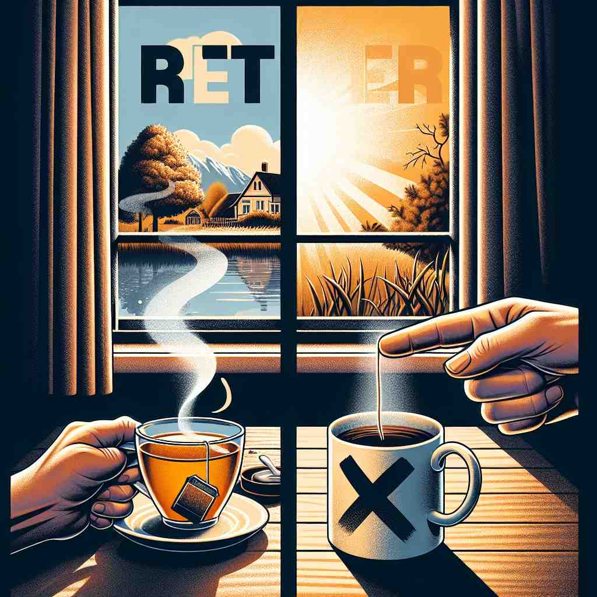

💬 I would rather have tea than coffee. 我宁愿喝茶而不是咖啡。

💬 The girl feels rather comfortable reading her book. 这个女孩在读书时感到非常舒服。
💬 I would rather have tea than coffee. 我宁愿喝茶而不是咖啡。
💬 The girl feels rather comfortable reading her book. 这个女孩在读书时感到非常舒服。
🔈 ['rɑːðə]
💬 I would rather eat an apple than a banana. 我宁愿吃苹果也不吃香蕉。
🔍 宁愿: 你有苹果和香蕉，你更喜欢吃苹果，不想吃香蕉。
💬 It's rather cold today. 今天相当冷。
🔍 相当: 今天你需要穿厚一点的衣服，因为气温比平常低，让你感觉有点冷。
💬 She's rather tall for her age. 就她的年龄来说，她相当高。
🔍 相当: 她比同龄的小朋友高很多，你一眼就能看出来。
💬 He ran rather quickly. 他跑得相当快。
🔍 相当: 他跑得比一般小朋友快，就像小兔子一样。
🧠 “rather” 主要有两个含义：1. 表示在两者之间进行选择，更倾向于其中一个，类似于“宁愿”；2. 表示程度，类似于“相当”、“有点”、“还算”。
⬅️ quite（相当）、pretty（相当）、somewhat（有点）：这些词都用来表示程度。
🔀 very（非常）： “very” 表示程度很高，而 “rather” 表示程度适中。
🌳 源自于古英语 'hræþer'，意思为 '更快'。现代英语中常用作副词，表示 '宁可'，'而是' 的意思。
💡 在记忆 'rather' 时，可以将其与 'prefer' 联系起来。联想 'rather' 是在做选择时的倾向，类似于更倾向于某种选择。
🗝️ adv. more precisely; more accurately 更准确地说；更精确地说
🎭 在科技展上，主持人展示了一款新科技产品。听众有些困惑，主持人解释道："不仅仅是快速，rather 是超高速，能够以惊人的速度处理数据。"
💬 He's my cousin, or rather, my second cousin. 他是我的表弟，或者说，是我的堂弟。
🤔 从"相当程度"延伸到"更准确"的概念
🗝️ adv. on the contrary 相反
🎭 在一个讨论会上，一位同事提出他们应该加班赶工，而另一位同事反驳道："我认为我们需要休息一下，rather 应该合理分配时间，避免工作过度。"
💬 I don't want tea. Rather, I'd prefer coffee. 我不想要茶。相反，我更喜欢咖啡。
🤔 从"相当程度"引申为对比或反驳
🗝️ adv. preferably; more readily or willingly 最好地；更愿意或更容易地
🎭 在一家咖啡店里，服务员询问顾客是要热咖啡还是冷咖啡，顾客回答说："我周末总是更喜欢喝冷咖啡，rather ，今天也不例外。"
💬 I'd rather stay at home than go out tonight. 我宁愿待在家里，也不想今晚出去。
🤔 从"相当程度"的喜好延伸为"更愿意"
🗝️ adv. somewhat; to a certain extent 在某种程度上
🎭 在一个阳光明媚的花园中，一位老人和小孩在聊花。小孩问："这些花全都开花了吗？" 老人回答："它们开了一些，but rather 很快就会全部盛开。" } ]
💬 She's rather good at playing the piano. 她弹钢琴相当不错。
🤔 核心含义的直接应用，表示一定程度